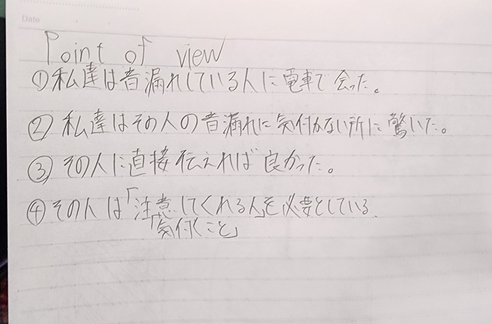
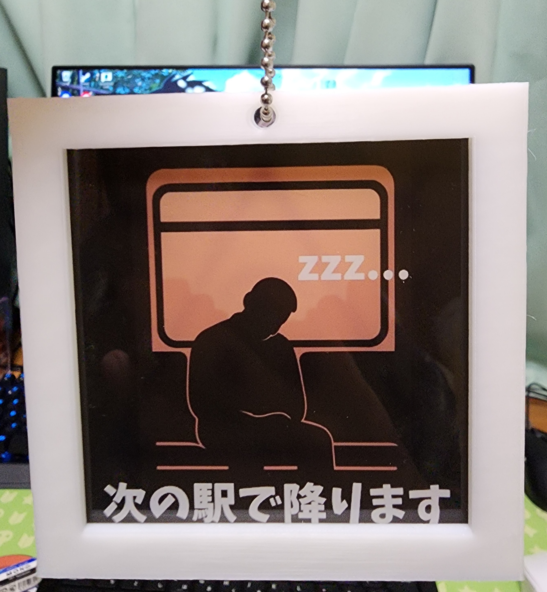
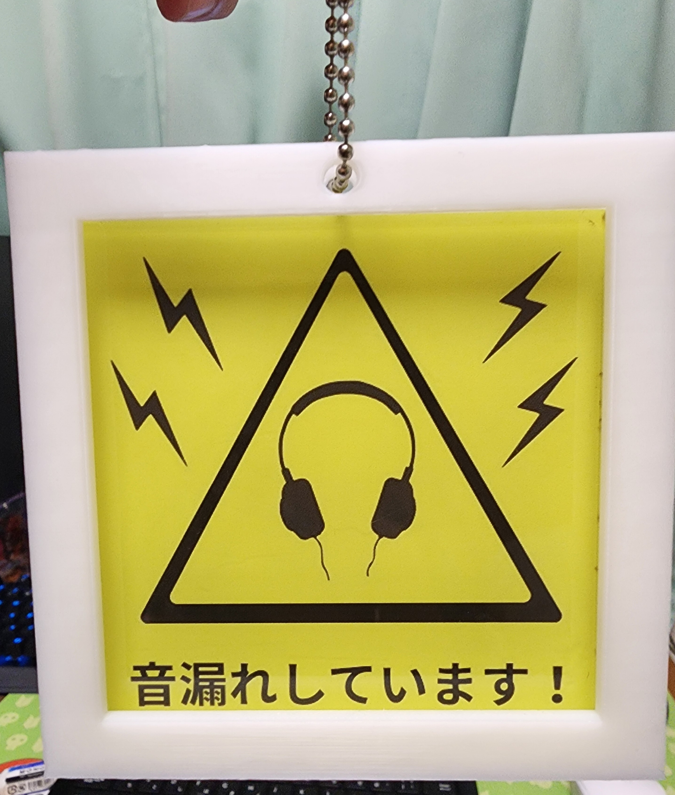
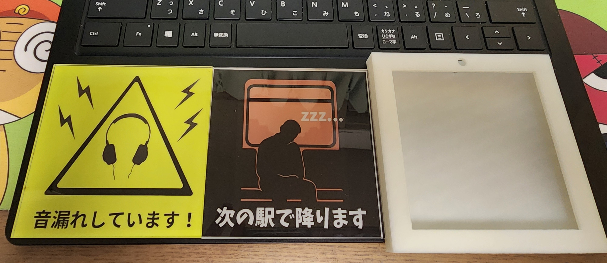

構想
今回は人を観察して気になった人から問題点や解決案などを考え実際に形にしてみました。私は電車でイヤホンから音漏れしている人を見かけましたが直接伝える事が出来ませんでした。
そこで人に直接言いにくいことをアクリルキーホルダーなどを通して間接的に伝える案を考えました。
書き出し
【構想時のスケッチ】

【完成作品】
 


設計図
外枠ケースのファイルアクリル板カットファイル
音漏れ注意イラスト
次の駅で降りますイラスト
イラストはAIなどを利用しすべて自作しました
作品説明
直接言いにくいことを伝えられるアクリルキーホルダー鞄などにつけて相手に見せることで間接的に伝える事が出来る
アクリル板を作り、ケースに入れることで様々な状況に対応する事が出来るかも！
制作理由
音漏れしている人を見つけたが直接言う事が出来なかった、これは緊張や人見知りによるものであると私は考えた。そこで人に直接言いにくいことをアクリルキーホルダーなどを通して伝えようとすることで伝えるハードルが下がるのではないかと思い作成しました。
「次の駅で降ります」の案は別の班の友人に案をいただきそのまま反映しました
電車で寝てしまっている場合でも、もしかしたら起こしてもらえるかもしれないという可能性がありいい案だと思いこちらも作成しました。